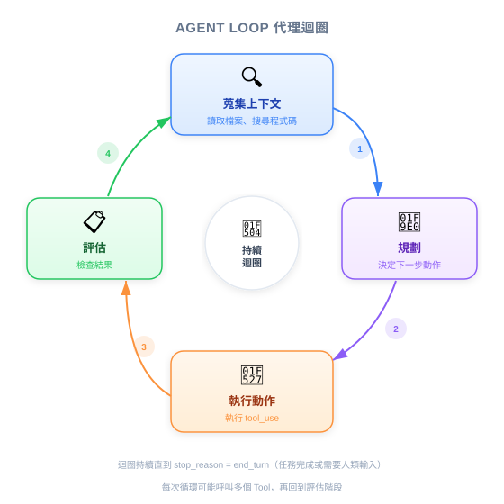
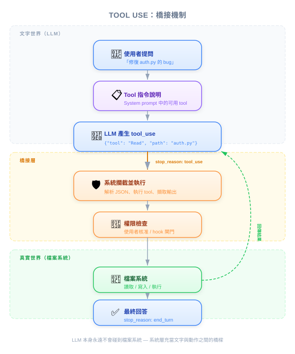

| 项目 | 内容 |
|---|---|
| 考试范围 | D2 — Tool Design & MCP Integration (占考试 18%) |
| Task Statements | 2.1 (tool interfaces), 2.5 (built-in tools), 1.1 (agentic loops) |
| 课程来源 | claude-code-in-action / 01-intro / Lesson 03 |

Coding assistant 不只是回答编程问题的 AI 聊天机器人。它是一个能自主收集信息、制定计划、并通过「tool use」机制执行真实动作（读文件、写代码、跑命令）的自主系统。PM 需要理解这点，因为它决定了 AI 编程产品能做什么、不能做什么，以及为什么 Claude Code 的架构具有竞争优势。
作为 PM，你不需要构建 coding assistant，但必须理解：
把 coding assistant 想成新入职资深工程师的 onboarding 过程：
| 阶段 | 新人 | Coding Assistant |
|---|---|---|
| 收集上下文 | 阅读文档、探索代码库、问问题 | 读取文件、搜索代码、查看项目结构 |
| 规划 | 把任务拆成子任务、找出依赖关系 | 决定要读哪些文件、以什么顺序工作 |
| 执行动作 | 写代码、跑测试、commit 变更 | 编辑文件、执行命令、创建新文件 |
| 评估 | 自我审查、再跑一次测试 | 检查结果，如果失败就回到前面的步骤 |
与 chatbot 的关键区别：chatbot 像在走廊遇到新人问个问题，他给你一个回答就走了。Coding assistant 像指派一张 ticket 给他 — 他会持续工作直到完成。

PM 必须理解的根本限制：
AI language model 只能读写文字。 它不能打开文件、跑程序或修改代码。它就像一个坐在没有电脑的密室里的天才顾问 — 能思考和建议，但什么都做不了。
Tool use 就是解决方案。 Coding assistant 扮演中介者：
这就像安全设施里的收发室系统：顾问在表单上写下请求，收发室取回文件送回。顾问从不离开房间，但仍能获取需要的所有资料。
🎬 讲师视频观点
讲师解释 coding assistant 会"把指令加入 context"让 AI 知道如何请求工具。AI 不是天生就知道怎么要求文件或跑命令 — 它从助手提供的指令中学习。
不是所有 AI 模型都能同样好地处理 tool use。Claude（Opus、Sonnet、Haiku）在这方面表现出色。PM 该在意的原因：
| 商业影响 | 意义 |
|---|---|
| 处理复杂工作流程 | Claude 能可靠地串联 10+ 次工具调用不迷失。较弱的模型在 3-4 次就失败。这直接影响你能自动化哪些任务。 |
| 容易扩展 | 新增功能（数据库查询、API 调用、自定义工具）能可靠运作，因为 Claude 擅长理解工具描述。降低集成成本。 |
| 代码不外泄 | Claude Code 按需读取文件而非预先索引。你的代码库不会存储在外部。简化安全审查与合规。 |
💡 PM 决策框架
评估 AI 编程工具时，问："它如何访问和修改代码？"如果答案涉及上传或索引整个代码库，那是与按需 tool use 不同（且风险更高）的架构。
CTO 请你比较三个 AI 编程工具。运用你学到的知识：
| 要问的问题 | 该看什么 | 警讯 |
|---|---|---|
| 它如何访问我们的代码？ | 通过工具按需读取文件 | 需要上传整个代码库到外部服务器 |
| 能处理多步骤任务吗？ | 展示可靠的 agentic loop（上下文 → 规划 → 执行 → 评估） | 只能做单轮问答 |
| 能加自定义工具吗？ | 可扩展的工具系统，接口清晰 | 固定功能集，无法定制化 |
| 安全模型是什么？ | 不预先索引，只读需要的文件 | 预先索引所有内容，embedding 存在外部 |
CEO 问："为什么不直接用 ChatGPT 写代码？它回答编程问题看起来很厉害。"根据本课，最准确的回答是什么？
安全团队对采用 Claude Code 有疑虑，问："Anthropic 会存储我们代码库的副本吗？"根据本课，正确的回答是什么？
你正在评估两个 AI 编程工具。工具 A 预先索引整个代码库，提供即时搜索。工具 B 通过 tool use 按需读取文件。哪个权衡分析正确？